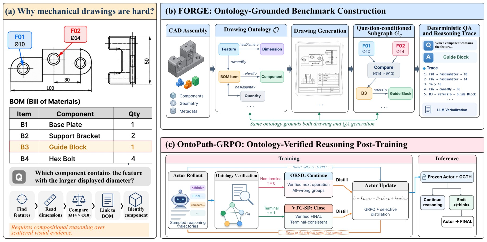
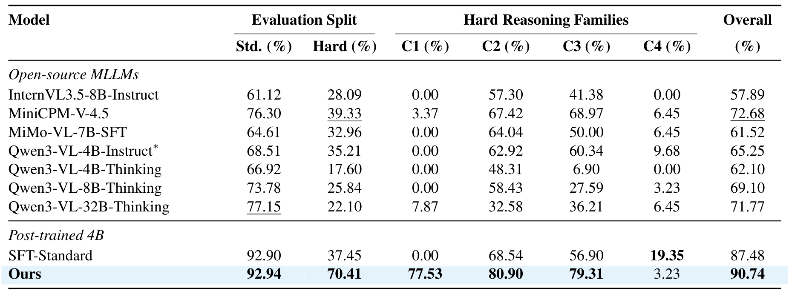

Abstract
Mechanical engineering drawings require models to integrate geometric, component-level, and tabular information through structured relations. We introduce FORGE, a CAD-derived benchmark for ontology-grounded compositional reasoning over mechanical drawings, containing 31,307 QA pairs over 1,724 drawings. We further propose ontology-verified post-training with Ontology-Routed Selective Distillation (ORSD), Verified Terminal Closure Self-Distillation (VTC-SD), and a lightweight Goal-Conditioned Terminality Head (GCTH). Across diverse open MLLMs, the strongest non-post-trained model reaches 39.33% on the held-out Hard split. Our 4B model improves Hard accuracy from 37.45% to 70.41% while maintaining Standard accuracy at 92.94%. Analysis shows that the gains are concentrated on deeper compositional reasoning and arise from complementary improvements in routing, closure, and termination.
FORGE

Overview of FORGE: (a) compositional reasoning over mechanical drawings, (b) ontology-grounded benchmark construction, and (c) ontology-verified reasoning post-training.
FORGE is built around a typed drawing ontology that links benchmark construction and post-training. From Fusion 360 Gallery CAD assemblies, we instantiate an assembly-specific ontology graph of components, features, dimensions and BOM entries, and generate single-sheet drawings in SolidWorks so that every relation in the graph is visually observable. Questions are then derived deterministically from question-conditioned subgraphs, yielding canonical answers and symbolic reasoning traces organized into Standard, Compositional and Hard settings. The same ontology supervises post-training: an ontology verifier tracks the reasoning state, ORSD distills the next required ontology operation from non-terminal states, VTC-SD distills a clean closure once the requested entity is resolved, and a lightweight GCTH learns when to stop reasoning without any ontology access at inference.
Results

Accuracy (%) on the FORGE test set. C1–C4 denote the four Hard compositional reasoning families.
Open-source MLLMs handle Standard questions reasonably well but drop sharply on the held-out Hard split; the best, MiniCPM-V-4.5, reaches only 39.33%, and scaling Qwen3-VL-Thinking to 32B does not help. Starting from Standard-only SFT, our ontology-verified post-training raises Hard accuracy from 37.45% to 70.41% while keeping Standard accuracy at 92.94%, giving the best overall accuracy of 90.74%. Gains are largest on C1–C3, while the longest family, C4, remains unsolved.